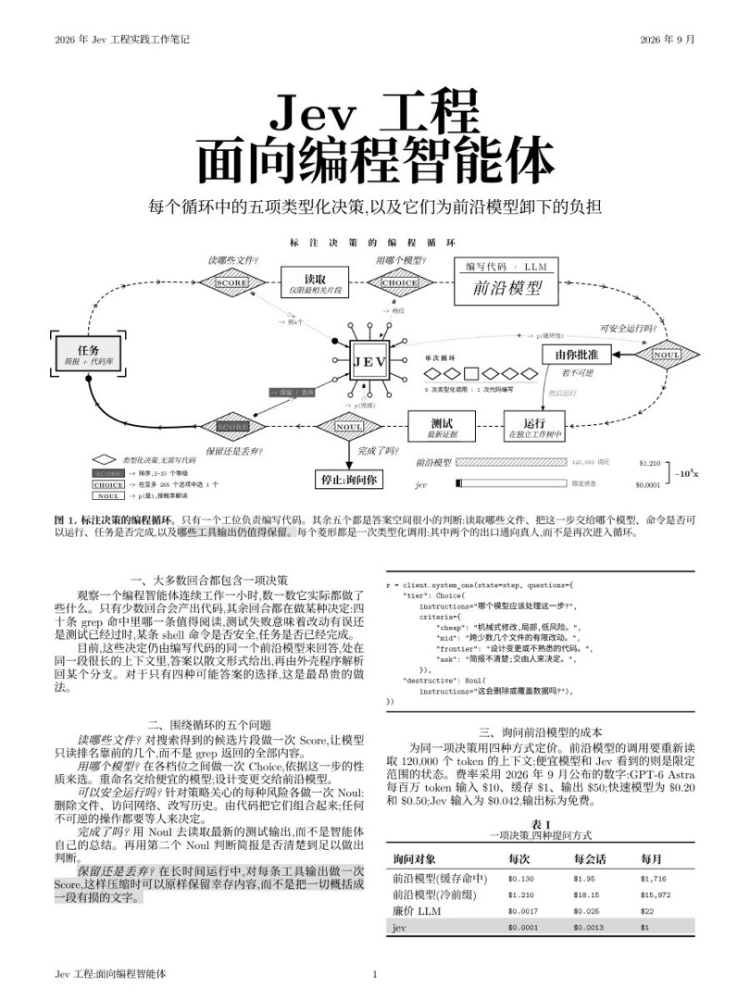
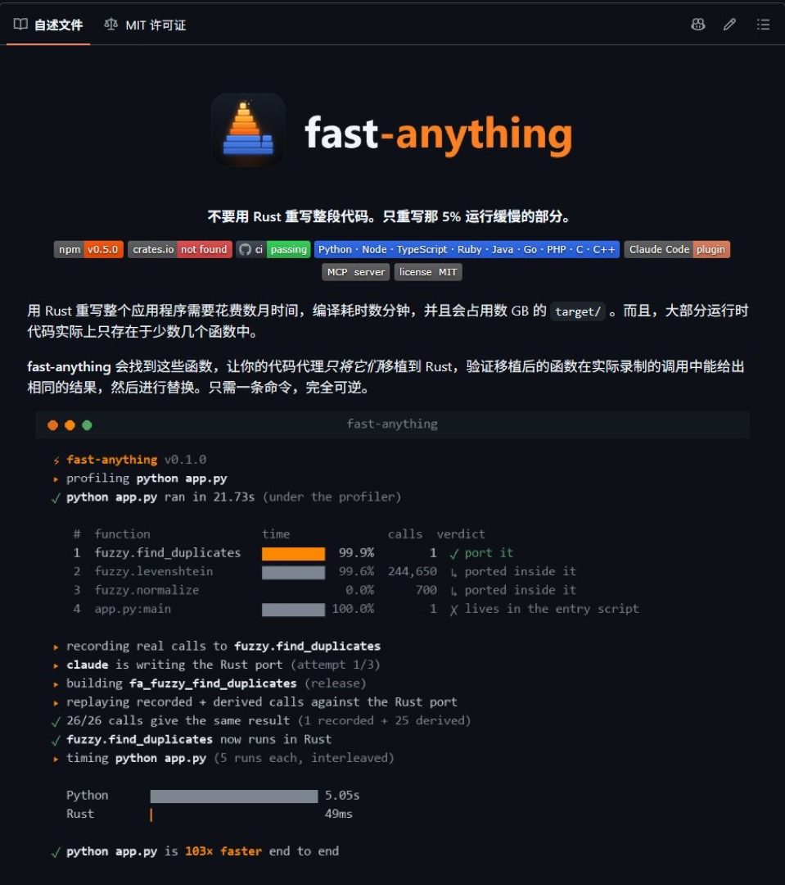
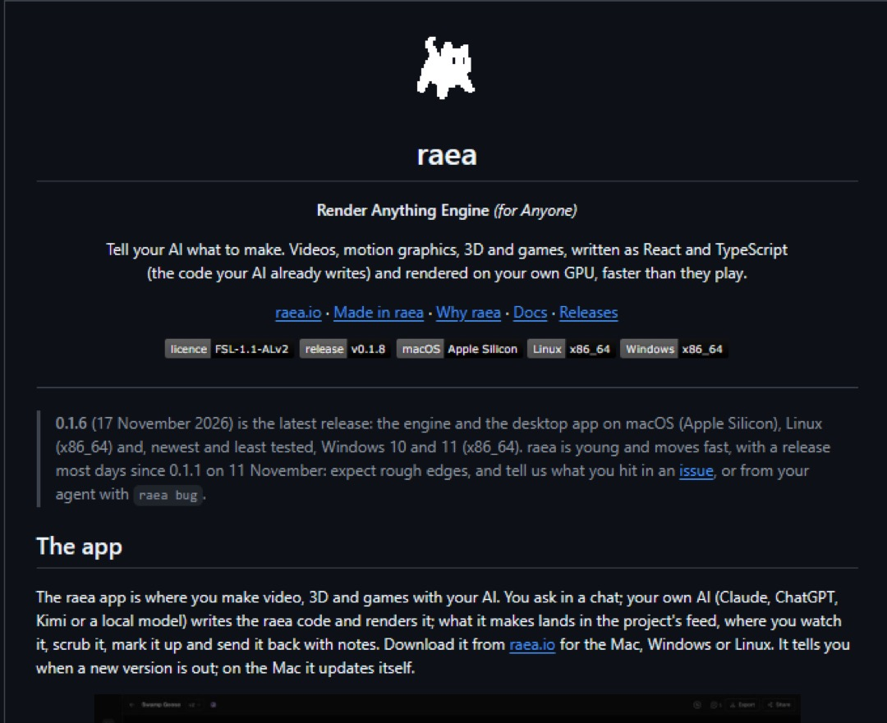

本期速览
02 AI Agent开源书更新3.0版
03 ARLoop复现Inkling循环结构
04 Claude发布始终在线Agent架构
05 GLM-5.4上线编程订阅增看图
06 fast-anything提速116倍
01｜Jev Harness配置提速300倍
来源（X） · @savvy_luvvvv · 2026-11-22 23:11
jev 创始人、instructgpt 合著者 diogo almeida 放出了一份 pdf，讲清楚怎么搭一套 jev harness
它的承诺：
> 速度最多快 300 倍
> 成本最多低 600 倍
快和省，全都来自模型外面那层 harness
用法：
> 把这份 pdf 和下面的文章一起丢给 claude code 或 codex
> 让它照着重建一遍自己的配置
花 2 个小时，你的 agent 就能跑在一套很少有团队拥有的 harness 上 ↓

引用内容
Iron Giant @irongiantXBT
中文译文
原文
02｜AI Agent开源书更新3.0版
来源（X） · @bojie_li · 2026-11-22 23:50
- 重写了各章节的大部分内容，消除了一些 AI 味，把综述式的文风改成了教学式的，更容易理解
- 新增 Jev 类决策模型在事件过滤、工具安全判断、评测 rubric、RAG 筛选、多模态信息稀疏化等方面的应用
- 新增 Meta Muse、Pine、dsh superagent 等 personal agent 的办事逻辑
- 新增 Multica、LobeHub 等办公 agent
- 新增 Anthropic 证明黎曼猜想、OpenAI 证明千禧年问题等科研 agent
- 修订语音交互部分，纳入一些最新的工作
- 重绘书中大量插图
- 新增社区翻译的蒙古语版本
- 合入社区的 30+ PR，解决 20+ issues
引用内容
Bojie Li @bojie_li
https://github.com/bojieli/ai-agent-book
全书围绕核心公式 Agent = LLM + 上下文 + 工具 展开，十章内容如下：
- 第 1 章 · Agent 基础知识：从"模型即 Agent"的新范式出发，建立 Agent = LLM + 上下文 + 工具 的核心公式，并引入 Harness 工程——模型之外的一切工程能力，才是真正的竞争力所在。
- 第 2 章 · 上下文工程：上下文决定 Agent 的能力上限。深入大模型 API 的上下文结构、KV Cache 友好设计、提示工程、动态提示词与 Agent Skills、状态栏元信息，以及上下文压缩策略。
- 第 3 章 · 用户记忆和知识库：让 Agent 跨会话记住用户、并接入外部知识。涵盖用户记忆系统、RAG 基础管道，以及超越扁平文本的知识组织与检索（结构化索引、知识图谱等）。
- 第 4 章 · 工具：工具是 Agent 的双手。讲工具分类与通用设计原则、MCP 协议与工具选择的挑战、感知/执行/协作三类工具，以及事件驱动的异步 Agent。
- 第 5 章 · Coding Agent 与代码生成：代码是"能创造新工具的工具"，是通用 Agent 的元能力。以生产级 Coding Agent 为例，展示这一最强通用工具的完整实现。
- 第 6 章 · Agent 的评估：把 Agent 的表现变成可比较的信号。从评估环境、数据集设计、指标体系，到统计显著性、可观测性、评估驱动选型，直至生产级内部评估与仿真环境。
- 第 7 章 · 模型后训练：预训练、SFT、RL 三阶段全景。何时选 SFT、何时选 RL，RLHF、算法比较、数据与环境，以及让模型学会工具调用、提升样本效率的前沿探索。
- 第 8 章 · Agent 的自我进化：不改权重也能成长。三种学习范式，从经验中学习、主动工具发现，到"从工具使用者到工具创造者"，让 Agent 从"聪明"走向"熟练"。
- 第 9 章 · 多模态与实时交互：把感知与行动从文本扩展到语音、GUI 与物理世界。语音三范式（级联/端到端全模态/全双工）、流式语音感知与合成、Computer Use 与机器人操作。
- 第 10 章 · 多 Agent 协作：群体的智能可以高于个体。多 Agent 分类框架、何时真正优于单 Agent、共享与不共享上下文的协作、失败模式，以及涌现的"Agent 社会"。
Repo: https://github.com/bojieli/ai-agent-book

03｜ARLoop复现Inkling循环结构
来源（X） · @alacheng · 2026-11-23 19:10
项目ARLoop是一个开源版本的实现，但开放论文，code，数据，checkpoints。
https://arxiv.org/abs/2611.05234
https://github.com/OSU-NLP-Group/ARLoop
04｜Claude发布始终在线Agent架构
来源（X） · @antiAIvo · 2026-11-23 17:06
拆解了“始终在线 Agent”的五大核心
Event Inbox、Timers、Memory、Permissions、Outbox
最近正好在精读 DeepSeek Harness (DSH) 的源码
两相对照看下来，最大感受是好像没什么新意
都是围绕Agent-Loop这个框架做文章
其实Agent从龙虾开始，核心运行就是那么点东西
后来出现的agent都只是在Hnaress上面修修补补
因此，你随便去看任何一个agent的设计与实现
都会感叹：“怎么都差不多，大家都一样”
做了一个动图对比下Claude这套跟DSH对比：底层骨架几乎重合
1. 收件箱解耦：都是先把输入落盘进 Inbox 队列，再异步消费
2. 单活防并发：一个 Inbox 同一时间只跑一个 Worker
对应 DSH 里的 wakeDriver 状态机
3. 差异只在场景：Claude 面向服务端无人值守
所以在主循环外补了 Timers（定时唤醒）
Deferred（异步审批挂起）和 Outbox（发件箱频控）
说白了，这套东西 80% 都是后端写烂的架构
还是想说一句：Agent的核心大脑还是在LLM
模型不行，设计的再好也是无济于事😛
https://claude.com/resources/articles/building-always-on-agents

05｜GLM-5.4上线编程订阅增看图
来源（X） · @dotey · 2026-11-23 12:46
智谱的新模型 GLM-5.4 已经向所有 GLM Coding Plan 订阅用户开放。
它新增了看图能力，官方说编程能力全面提升；对有每周额度的用户，用 GLM-5.4 能用的量比上一代 GLM-5.3 多 50%。
消息来自 Zixuan Li 在 X 上发的帖子，Zixuan Li 的 X 简介写着 http://Z.ai 负责人（Lead）。
引用内容
Zixuan Li @ZixuanLi_
中文译文
GLM-5.4 现已面向所有 GLM Coding Plan 用户开放。
全新的视觉能力和更强大的全方位编码性能。
对于使用周配额的用户，GLM-5.4 的配额比 GLM-5.3 多出 50%。
原文
GLM-5.4 is now available to all GLM Coding Plan users.
New vision capabilities and stronger all-round coding performance.
For users with weekly quotas, GLM-5.4 now comes with 50% more quota compared to GLM-5.3.
06｜fast-anything提速116倍
来源（X） · @mingzi206 · 2026-11-22 17:38
不动你 95% 的老代码，一行命令直接给程序提速 116 倍！
REA → Rust 重写万物 → RAEA 刚把人看麻，今天直接杀出终极怪兽 fast-anything（加速万物）
别再傻傻拿 Rust 重写整个项目了，它只给最慢的那 5% 做全自动“心脏搭桥”：
· 自动揪出性能瓶颈函数，录制 500 次真实运行调用
· 丢给 Claude Code / Codex，只把这几个函数重写成 Rust
· 真实数据 + 极端边界全量回放，100% 结果一致且真变快了才放行
· 随时一键回滚，原项目零破坏
Python / TS / Go / PHP / Ruby / Java / C++ 全支持，原生自带 Claude Code 插件和 MCP
官方真实跑分直接看傻： Python 4.91s → 42ms（116×）PHP 55× ｜ Go 21× ｜ TypeScript 20×
下周这帮疯子还打算端出什么逆天“万物”？
开源仓库和一行安装命令扔一楼 👇
#AI #Rust #开源项目 #ClaudeCode #独立开发 #GitHub

引用内容
明子206 @mingzi206
它干的事简单粗暴到不可思议：
让你直接用 React 和 TypeScript，在本地 GPU 上光速生成视频、3D 动效、甚至可玩的游戏。
~ 用代码做超高清视频。
~ 用代码搭 3D 场景和物理动画。
~ 用代码当场写出一个能玩的游戏。
~ 彻底踢掉浏览器，90 帧 1080p 视频只要 1 秒出片。
~ 让 AI 代理自己去写、自己抽帧检查 Bug、自己修复。
~ 一键导出视频，一键导出独立游戏。
说白了，你手里的 Claude Code 和编程 Agent，从今天起正式兼职成了你的个人皮克斯工作室 + 独立游戏引擎
想象一下，我们居然正在亲眼见证这一切发生……
开源仓库和一键安装命令方评论区

07｜Eleven Turbo首响150ms
来源（X） · @ElevenLabsDevs · 2026-10-21 01:23
中文译文
Eleven v4 Turbo 已上线。首次出声延迟约 150ms，支持 REST + 流式传输 + SDKs，通过一个 model_id 即可在 v4 和 v4 Turbo 之间切换。
原文
Eleven v4 Turbo is live. ~150ms to first speech, REST + streaming + SDKs, one model_id to switch between v4 and v4 Turbo.